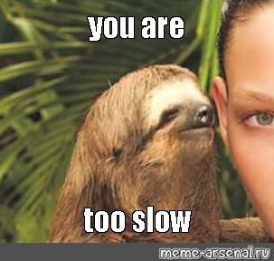

월간 회고록: 2023년 1월
Streamlit 캐싱, 시계열 자료분석, 글또 8기, 데분생 2기

새해가 밝은지 얼마 지나지 않은듯 한데, 어느덧 2월도 저물어가고 있네요. 얼른 지난 1월을 회고해보려고 해요. 매주 일요일 적었던 1월의 주간 회고를 돌이켜보니, 1월도 느낀 바가 참 많았던 한 달이었더군요. 산업계로 이직을 하고부터는 매달 새로운 것을 느끼고, 새로운 생각을 하게 되는 것 같아요. 여전히 이 곳은 제게 아주 챌린징한 곳인가 봅니다. 지난 1월의 이야기를 일과 개인적인 부분으로 나눠서 이야기해보겠습니다.
일
Streamlit 캐싱
이직 후 맨 처음 맡았던 업무는 대시보드 개발이었는데요. 연간 회고록에서 말씀드렸듯이, 대시보드 개발은 Streamlit으로 진행하고 있습니다. 1월 첫째 주에 우선적으로 올릴 지표들, 제가 필요로 된다고 생각했던 반응형 그래프 기능들을 다 반영해서 팀 내에 첫 공유를 드렸었습니다. 그 중 앱의 로딩 속도가 조금 느린데, 개선이 가능하냐는 피드백이 있었는데요. 저도 이 부분은 공유 세션을 가지기 전에 생각했던 부분이긴 했습니다.

앱 스크립트를 짤 때 초기에만 1번 Hive를 찔러서 테이블을 가져오는데, 왜 이렇게 앱 로딩 속도가 느릴까? 지나치게 많은 반응형 그래프를 한꺼번에 한 페이지에 로딩을 해서 가져와야하기 때문일까? 이러한 개인적인 추측을 했었죠. 그러나, 원인은 Streamlit이 가진 본질적인 특징에 있었습니다.😀
그렇다면, Streamlit의 어떤 특징 때문에 앱 로딩 속도가 이렇게 느렸던 걸까요? Streamlit은 앱 사용자가 이것저것 눌러보며 앱의 특정 기능을 실행하면, 스크립트를 처음부터 끝까지 다시 실행시키는 로직을 가지고 있어요. Streamlit으로 대시보드 개발을 손쉽게 만들어주는 데에 이 로직이 큰 역할을 한다고 해요. 문제는 스크립트를 재실행시킬 때마다 함수가 반복적으로 다시 실행되고 객체 또한 반복적으로 다시 불러와지기 때문에, 앱 로딩 속도에 큰 영향을 미친다는 점이죠. 아주 가벼운 형태의 앱이면 문제가 되지 않겠지만요.
이러한 본질적인 특징때문에 제가 앱 스크립트에 첫 줄에서 딱 한 번만 Hive를 찔러서 가져와도, 제가 만들어둔 반응형 그래프를 유저가 한 번이라도 클릭을 한다면 다시 이 스크립트를 처음부터 다시 실행시키기 때문에 로딩 속도가 느릴 수 밖에 없었던 것입니다. 이 문제는 새로고침을 해도 물론이었으며, 여러 페이지로 구성한 앱 내에서 다른 페이지로 넘어갈 때에도 문제가 됐습니다.
이는 Streamlit에서 제공하는 캐싱 기능을 통해 아주 손쉽게 해결할 수 있었습니다. 스크립트 초반부에 캐싱 코드 한 줄만 딱 넣어주면, 첫 실행 시 함수 호출 결과와 객체를 저장함으로써 앱 로딩 속도를 대폭 개선해줬죠. 얼마전 Streamlit 1.18.0이 정식 릴리즈되면서, 테스트 중이었던 캐싱 코드도 정식으로 릴리즈되었어요. 관심 있으신 분들은 Streamlit의 블로그 포스트와 Documentation을 참고해보시기 바랍니다.
시계열 자료분석
여기서는 시계열 자료분석을 수행할 일이 없을 줄 알았는데요. 그럴 일이 생겼습니다!
시계열적으로 접근하는 데이터 분석은 언제나 웰컴이에요. 제게 가장 익숙한 문제의 유형 중 하나이기 때문입니다. 여기서 자세하게 어떤 배경에서 어떤 시계열적 접근이 필요로 됐는지 말씀을 드리진 않겠지만1, 여기서 또 한번 느낀 바는 역시나 세상에 쓸모없는 배움은 없다는 것입니다.
여러분들이 지금 배우고 있는 것들이 추후에 업무에서 어떻게 쓰일 지는 아무도 모릅니다. 항상 최선을 다하세요. 그리고, 걱정하지 마세요. 배워두면 좋을 것 같은데? 근데, 좀 우선순위는 아닌거 같은데? 이런 생각이 드는 것들이 많으신가요? 시간이 허락 된다면 주저하지 말고 배워보세요. 주말에 시간을 내서 이틀 정도만 바짝 해보세요. 새로운 도구의 기본적인 것들을 익히는 데에는 생각보다 긴 시간이 걸리지 않습니다.
언젠가는 내가 가지고 있는 것과 시너지 효과를 내줄 수 있는 날이 올겁니다. 제 경우에는 블로그에 글쓰기가 그랬고, Git이 그랬고, Python이 그랬고, SAS가 그랬어요. 이 외에도 더 많은 경우가 있지만 이만 줄이겠습니다. 시간이 없다는 핑계, 우선순위가 아닌 것 같다는 핑계가 머리 속을 지배하고 있을 때는 잡스 형님이 Connecting the dots이라는 주옥같은 명언을 남긴 스탠포드 대학교 명연설을 한 번 보세요. 떨어져 가는 학습 동기를 채워넣어주는 최고의 동영상 중 하나입니다.
저는 과거에 주저하기만 하고 결국 우선순위가 아니라는 핑계로 새로운 것에 대한 배움을 미뤄왔던 사람이거든요. 여러분들은 그러지 않으셨으면 합니다. 그래서, 요즘 이렇게 배워야할게 산더미인 듯 해요.😭
개인
글또 8기
지난 1월 말부터 글또2 8기에 참가하고 있어요. 글또는 개발자들의 글쓰기 역량을 강화하고 글을 꾸준히 쓸 수 있도록 돕는 커뮤니티인데요. 지난 한해를 회고하면서 글또 다음 기수에는 꼭 참가를 해보고 싶다는 생각을 했었어요. 그 이유에 대해 조금 이야기 해볼게요. 대학원에 진학하며 개인 블로그를 지금까지 꾸준히 운영해오고 있는데요.3 그런데, 대학원을 졸업하고 글쓰기에는 조금씩 나태해져 가고 있는 제 자신을 발견할 수 있었어요. 업무, 이직, 새로운 산업에 적응 등을 핑계로 말이죠.
그래서, 새로운 자극이 필요하다고 생각이 들었어요. 넘치는 의욕으로 지난 1차 제출 기간에는 2개의 글을 제출했었어요. 2차 제출 기간의 첫 글은 지금 쓰고있는 이 월간 회고록이 될 듯합니다. 1차 기간에 제출했던 2개의 글도 기술적인 주제의 글은 아니여서, 다음 글은 꼭 기술적인 주제로 써보겠습니다. 블로그를 회고록, 칼럼이 지배해가고 있는데, 이제 기술적인 글을 쓸 때가 되지 않았나 생각하고 있습니다. 아무튼, 글또 8기에 계획된 12번의 글 제출 기간 동안 꾸준하게 글을 써내려가는 모습을 이 블로그를 통해 보여드리겠습니다.😀
R 아이돌과의 만남
1월 둘째주 토요일에 제가 선망하고 있었던 R 고수.. 진환님과 만남의 시간을 가질 수 있었어요. 만남의 계기는 진환님의 블로그를 보다가 보내게 된 메일 한통이었어요. 전부터 한번 쯤 꼭 만나뵙고 이야기를 나눠보고 싶었어요. 그래서, 메일을 몇 통 주고받다가 제가 마지막에 불쑥 만나볼 수 있냐고 이야기를 드렸어요. 이런 제안을 드리는 것은 처음이라, 썼다 지웠다를 한 10번 정도 반복한 것 같습니다.😂
다행이 제 제안을 좋게 봐주셨고, 오프라인에서 만나 이야기를 나누면서 정말 시간 가는 줄 모르고 대화를 나눴어요. 그리고, 여기에 자세한 이야기는 적지 않겠지만, 세상이 참 좁다는 것을 한 번 더 느꼈습니다. 기억에 남는 이야기 중 하나를 해보자면, 수면 시간과 관련된 이야기였는데요. 하루에 보통 수면 시간을 얼마나 가져가시는 지 만나서 꼭 여쭤보고 싶었어요.
제가 받은 대답은 충격이었습니다..
7-8시간씩 주무신다고 합니다. 저랑 수면 시간이 비슷한데.. 진환님 블로그를 들여다보면, 왜 진환님의 하루는 30시간 같죠? 깨어있을 때의 시간이 중요함을 다시 한 번 느꼈습니다. 진환님과의 만남도 제겐 정말 좋은 자극제였습니다. 이런 분들은 평소에 어떤 생각을 하시고, 어떻게 지내시는지 참 궁금했거든요. 다음에 다시 뵐 수 있는 기회가 있었으면 하네요.😀
맺음말
여러분들의 1월은 어떠셨나요? 저는 여전히 배워야할 게 산더미인 요즘입니다. 그래서, 2023년에는 저를 최대한 바쁘게 만들어보고 있습니다. 퇴근하고 운동을 갔다가, 저녁 식사 후 필요한 공부를 하는 생활이 무의식의 습관으로 자리 잡게되는 한 해가 되길 바라며 글을 마칩니다.
각주
라이센스
인용
@online{방태모2023,
author = {방태모},
title = {월간 회고록: 2023년 1월},
date = {2023-02-21},
url = {https://taemobang.com/posts/2023-02-21-monthly-memory-202301/},
langid = {kr}
}